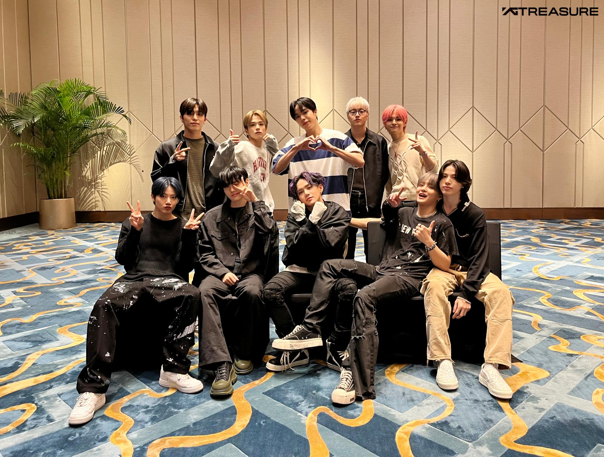

| Name |
Nur Atiqah Binti Sharudin |
| Age |
21 Years old |
| Gender |
Female |
| Race |
Malay |
| Nationality |
Malaysia |
| State |
Negeri Sembilan |
| City |
Rembau |
| Hobby |
Reading & Music |
ABOUT ME
Milton, a well-known poet, once noted, "Every person is unique in his own way." Every person that God creates is given to this world with potential and a high calling. Whether or whether we are conscious of this unique potential that we have now is the question.
I am Atiqah, hailing from the state of Negeri Sembilan. I'm studying information management at Universiti Teknologi MARA right now. In addition, I am competent, capable, and self-assured. I've learned to work extremely hard and to be deeply passionate about my career.
I have always been taught to concentrate on my interest since I was a little child. It’s not necessary to only complain about what life has not given you, rather than it is to find out what life has actually in store for you. God has given everyone the potential and it is in our hands how we use it. We weave our present to see a beautiful design in the future.
It's true that merely reading books won't provide you enough experience or understanding of the real world, but I never wanted to limit myself to reading. I've finally arrived where I am today because to my career-focused training and constant self-balance. I recently started a new language course, and I keep striving to succeed there as well.
I adore music and listen to it every day. You can select from a wide variety of musical genres and take pleasure in them. When I'm feeling fantastic, I like to listen to upbeat rock music that gives me strength and enthusiasm. When I'm worn out, I listen to some soothing music.
People can communicate their feelings and emotions through music. You start to adore something when it sounds like to you and is simple for you to understand. You can take pleasure in music in a variety of ways. A nice hobby to have is collecting music in alongside listening to it.
A hobby like music can have no restrictions. It reduces global distance.

Top 5 of my favourite singer/band
- Treasure
- Bang Yedam
- Taylor Swift
- Gracie Abrams
- The 1975
Top 5 my favourite Movie
- The Greatest Showman
- Love, Rosie
- Interstellar
- Marvel Movies
- Friend Zone
|